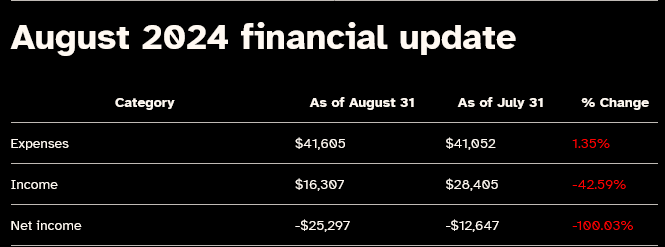

![Japanese Twitter artist 安場羊治(Anby) makes their stance on AI discourse. This tweet was discovered as another Japanese artist had their artstyle copied by AI art. Their tweet translated by Google is as follows:'AI had a future where it could be a great help to new manga artists who can't hire assistants by outputting backgrounds that don't require individuality or by creating shortcuts for tones and flat processing, but it looks like that's no longer possible.
If you use AI to make money, not only will you lose credibility as a creator, but you may not even be treated like a person.'](assets/imgs/AnbyScreenshotTwitter.png)
AI, Art, Copytheft, Law, Order, Code, Privacy, Hacking, and Where We Stand!
2024 - September, 10: I dropped out of school due to a bevy of emotions and regret that I can't stick to it. This discussion will aim at one of my concerns that made me drop out. Neural network massive language models sitting in data centers hogging electricity and water, constantly needed to make ground move in a 600 Billion dollar industry.
Hi. Let's talk about two videos I saw lately plus more in AI. For some bonus fun, let's get up to speed on this year and happenings...
If I can summarize what I remember from those videos, Mark Zuckerburg is wondering where the AI curve ends and is looking less like an alien. According to other news I read (the globe and mail dot com) about Mexico. These investments in computing are quick to flee the USA and create new Silicon Valleys wherein places that need money, but don't neccessarily have the resources to survive are.
'new Silicon Valleys...' - The data must flow.
In this era, data is everywhere and every social security number of every citizen in the States, Canada, and the United Kingdoms has apparently been leaked. Travel through image above to see an article detailing the event in more detail. It is stunning.
I have brought up three topics, let's degauss it. The first is of twitter and art theft: According to digital trends: "The model is trained on a mix of web data (with a knowledge cutoff of Q3 2023) and X user data. Currently, Grok the chatbot is powered by the Grok-2 model, which was released in August 2024.", it speaks of their AI grok. I can't really 'grok' what the context is behind @urct's cry, whether the user generated the content on Grok or another platform... If it was generated by Grok, then there's evidence of it using users' art to generate content against their will and against their revenue stream. The post content of @urct's retweet was deleted before I could screenshot, so all I will leave is the @. We are quickly making ourselves obsolete.
Planned Obsolesence - The cash must accumulate.
We flought ourselves with high concept concepts like, "simulation theory", "flat earth theory", "theory of everything", "artificial general intelligence", to name some big ones I recall. All the while Earth remains a dangerous place to live and so many crises are visible on the daily. I want art to continue being a valuable path for people, as I would love to follow that path given time. I know I personally have trouble making money from my passions, a lot of my work that I put out is pretty tepid and uninteresting, I am unwilling to make a decent try of things and be let down. Be let down...
It is pretty scary that we are training these AI to replicate what we do and say, with knowledge of how imperfect we are, we are gods in this era. Our fathers and theirs shaped earth, land, and stone. We shape silicon. What ghosts do we leave as we die? A recent video on Youtube got me wondering that...
What legacy do I leave? A support to my family, perhaps, but to the greater world, I was not a footnote, save for what I get to write myself. I made my shrine to my cats on my page, which is more than I'm used to doing to connect my public persona with my private life. Even like vtubers, tho I have posted a lot of details about myself, I keep track of what I say as Kaizar Nike.
I am Kaizar Nike - My public face said.
I could stop talking at any point on this blog, but let's cover more of what's on my mind of late. Transgenderism is a wierd wyord. I keep getting disgusted by their scarred bodies, turned on by their genshin transformations, confused by their hatred, infatuated with their works. I keep Shinigami Eyes on me, a interesting plugin. I keep treating red names as problematic and green names as heroes, but then I see those green names saying vile things, and those red names I have trouble taking seriously, but sometimes wisdom pops uot.
Today: Nikocado Avocado, Natalie Lawman, Taylor McCue, Brianna Wu, Christian Chandler, these names do not all fit in the same circle of a venn diagram, but are people none the less. So much of our worlds revolve around the icons we see or hate each day.
Today, Nikocado makes a reveal. Yesterday, Brianna Wu speaks. A day before, Taylor makes a crude art of a teenish boy disgusted at a tran's wound of a sex part. Inbetween those times, Natalie freely exudes her history with the games press. At another point Chris gets out of prison for allegdly raping his mother. (Not willing to research that thanks.) These people live in another world to me, some closer than others. Yet it's still Earth; the planet.
Summation - Respite for Weary Eyes
Now that you're up to date with the past, let's talk future. I need cash, so I'm willing to try anything. There's ad space for sale now on this site, but *hint hint*, I won't let intrusive ads on. So what did we learn? What's next? I want to work on my RPG project, been lacking Steam for that. The AI debacle could go all the way to disaster, but I think people will lose money on it just like Crypto, Web-3 and the 3D + AR/VR/XR boom. The disaster I'm thinking of: AI getting outside it's sandbox, could be very terrible to online creatives as they find digital eye time being competed for with bots. Here's a vision from a Google before it's Monopoly hearing:
Bye.
Because I didn't upload this in time let's talk the debate. Kamala Harris won decisively in making me not want to vote for her or Trump. Global Warming was a foot note. Harris spoke of a two state Israel/Palestine, but who would accomplish such a deal? Trump offers peace and American strength, Harris offers unity and justice for all, "We are both gun owners, guns aren't going away," Harris said. Transgender and women would be better off under Harris, as Trump wants to leave women's rights to tyrannical states. Trump kept asking what Harris did during her term as vice president and calling them the worst pair to hold office in history of the USA.
Global Warming, more like Global boring.
Calling out my dad here, but he said they didn't make any real mistakes, they talked over each other a lot, and were fighting the hosts. Political drama, and people loved Harris's victory. The internet (Forbes) is laughing (Twitter img).
I am now listening to a Twitter discussion on Spaces, one guy is confused about Roe v Wade. The topic is Trump's refusal to outright say he would veto a Republican led abortion ban. Now they are talking about how reliable the government is, I could keep typing, so I might.
This space is a tragedy, this Colin Bull guy says girls know the day after if you're pregnant. Thank you guys for discussing women. This is cringe, the topic failed. The time is 11:18 PM Central US. Now they're talking Palestine. This Destin guy is talking about how Harris's anwsers failed for me tonight. John Spencer "@spencerguard", brings up the point that Trump spoke reality of Iran. Now jefe showed up talking shit of Destin. Man Destin is cringe, I love this - thank you for reading. This after debate party is real, they have spent 30 minutes laughing at their dumb discussion. I am watching Adrian try to teach jefe how to talk to people.
I continue to listen to this, now Adrian is claiming a girl sucks out the blue part of tide pods first, and calls her retarted. What a wonderful guy, I love going to Elon's Twitter. Did you see his Taylor Swift baby making offer? Now back to the space, this Adrian guy has a unworldy fascination with autistic people. Now Michael has arrived at 12:10 with more substance, Harris's $50,000 small business grants. They are sprinkling in this conversation with bits of crypto and deregulation. Some discussion of past cantidates like Rand Paul and Bernie Sanders. Now they're talking of Elon Musk. At 12:48 they're looking at Elon's successes. They are arguing again. I like when the host argues with everybody. This Adrain guy could speak in Audible books. I LOVE MICHAEL BARBOUR! He got kicked and thus it ended.
Spaces - Forums of the Heart, rarely mind.
On to other things:
Cohost is going away, I might backup parts of it to my site, including my better old posts. IT's sad, as that place was a haven for the transgender and queer people like myself. I hope a new site can rise and be sustainable in its place. Now time to say goodbye for real, check out my neocities! https://k4izn1ke-c1ubh0u53.neocities.org

 And here is the final code, check it out!Now let's walk through the code step by step. We define the html and head tags first. (tags are Html's way of identifying things. We then import jQuery as a tool. Then we define the indoc styles we need.
And here is the final code, check it out!Now let's walk through the code step by step. We define the html and head tags first. (tags are Html's way of identifying things. We then import jQuery as a tool. Then we define the indoc styles we need.